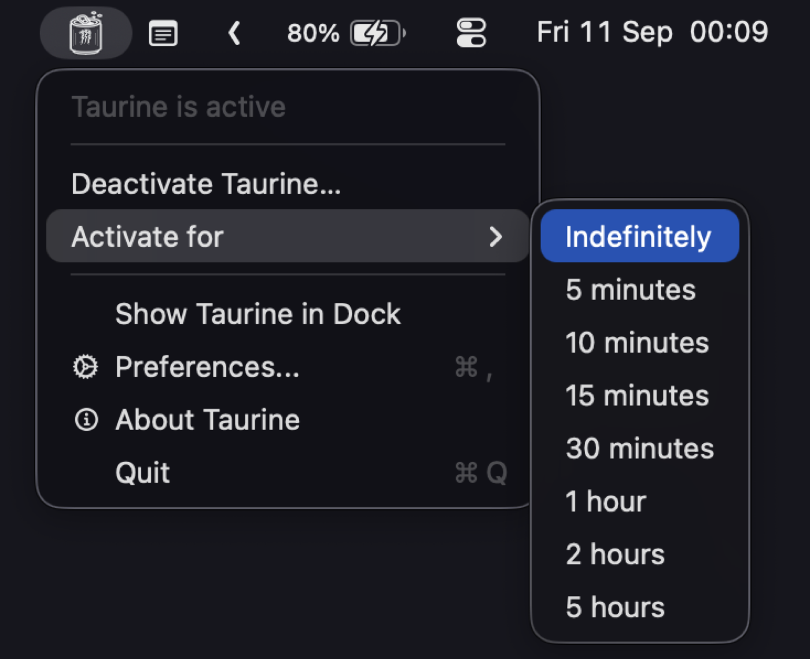
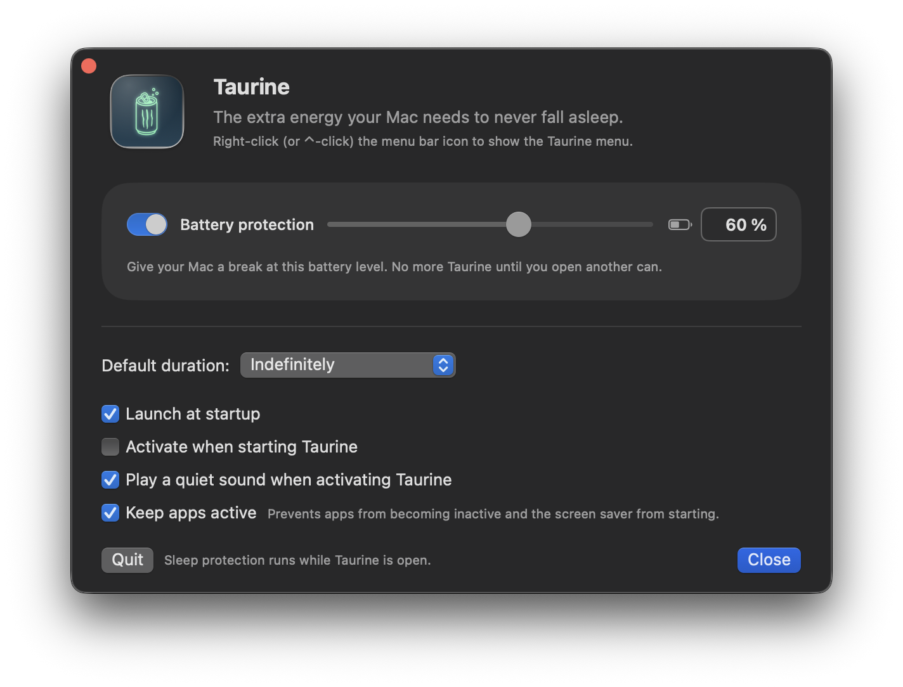

Don't let your Mac fall asleep.
Not even for a second.
The extra energy your Mac needs to never fall asleep.
Download for macOSFree and open source · Requires macOS 14.6 or later


Lid closed
Shut the lid and keep going. No sleep, no dimmed screen, no screen saver.
Battery protection
On battery, Taurine taps out on its own once the charge hits the level you picked. Plugged in, it keeps going.
Sleep always comes back
Quit, crash, force quit, log out — or just delete the app while your Mac is running. Sleep is restored right then.